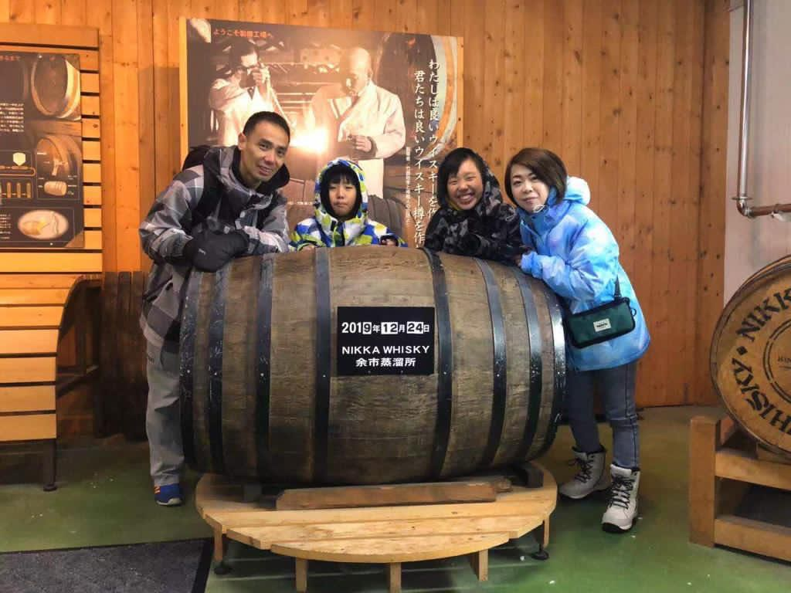
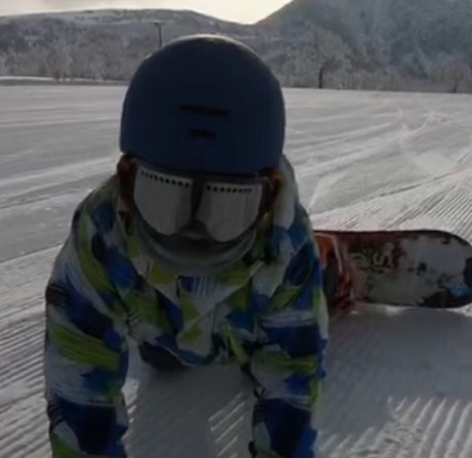

Hello, I am IUN Pak Hang, Marina.
I am a F4 student studying in Sacred Heart Canossian College (English Section), which is also known as SHCCES. This is my 10th year studying in this school and I am blissful that I can be here with all the teachers and friends. I also have a brother who is 2 years smaller than me. Although sometimes I hate him, I love him 3000 since he is always making me delightful for some bizarre reason. Most of my friends consider that I am an optimistic girl. This characteristic can also be reflect from my favourite colours are red, orange and yellow, which are some warm colours.

Who is this cute little kid? It's me! Marina!
Family Members
 Here is our family photo! (From left to right: father, little brother, me, mother)
Although sometimes there are conflicts between us, we apologize for our mistakes and learn from each lesson. I remember the longest time which my mum and I did not bother each other was about 3 days. However, in the end, we fixed the problem and we are fine again. Furthermore, my brother and I love annoying each other. Nonetheless, we never fight with each other since this is the way we get along since we were young! I love my family 3000!!!Judo
Moreover, I love playing sports. I have been learning judo for almost 9 years. I started learning it when I was in the summer holiday of primary 1, and it’s because of my brother.
 This is my sencond Family!
This is my sencond Family!
 They are my sisters without blood relation
They are my sisters without blood relation
Skiing
I have also learnt skiing when I was 10. After playing for a year, I found that I want to challenge myself. Therefore, I learnt to play snowboard. Although playing snowboard always fall down nonstop, again and again, I enjoyed it more than skiing did.

Falling means you are closer to success!
Music & Art
Ironically, I have actually played flute and piano for a very short time. However, I quitted because I could not manage my time well and I found out that I am not interested in music and anything that needs to sit for a long time, for instance, drawing.


They are both coovered with dust...
Last but not least, I am looking forward to having more contributions to the school which I have been studying for almost 10 years. I wish my family can have a healthy body and be cheerful all the time. I wish everyone all the best.